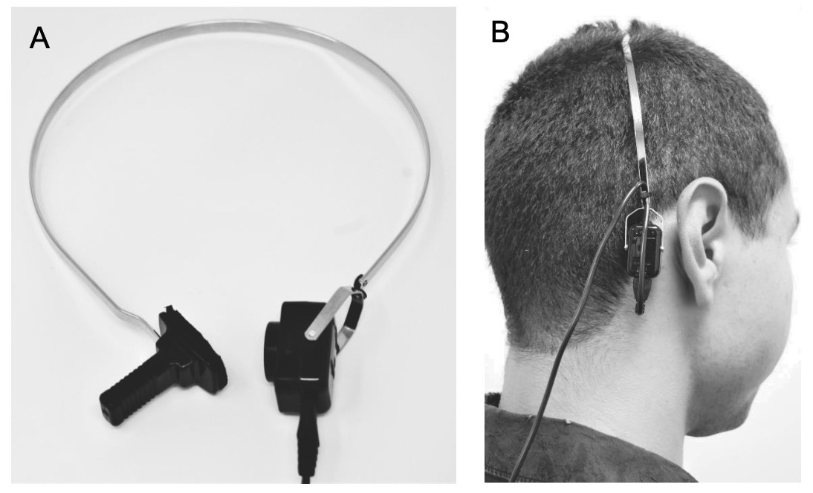

Psychoacoustics
Human perceptual limits
Psychoacoustic Masking
Not the same thing as the study of hearing
Hearing is physiological, psychoacoustics is behavioral
“What is the difference between the physical sound and its perception?”
Perceptual Limits and limens
Masking Effects
Perception of Loudness and Pitch
Sound Localization
Musical Psychology
Applied Psychoacoustics
“What are the frequencies and amplitudes which humans can detect?”
“What are the changes in frequency and amplitude that humans can detect?”
More on this today and next time
How does perceived loudness differ from physical loudness?
How does perceived pitch differ from physical pitch?
Are humans linearly and ‘accurately’ perceiving amplitude and frequency?
This is next time!
How do humans detect the relative positioning of sound sources in space?
How accurate are we at localizing sounds?
Are we able to do this equally in all areas around us?
This is next time!
How do we perceive different notes (tones) and combination to tones?
What are the interactions between sounds and changes in body state?
What sounds produce what emotional responses (e.g “too loud” or “annoying” or “pleasant”?
What are the differences in the sound perception of musicians and non-musicians?
We’re not going to cover this!
How can we make products, buildings, or games sound in a certain way?
“How should this new motorcycle sound?”
“What kind of alarms will be most noticeable and alarming?”
“How can we give a sense of 3D space to somebody wearing headphones?”
“What are the acoustical correlates of ‘quality’?”
… and it is!
Music 175: Psychoacoustics at UCSD!
We’re just going to skim the surface
In terms of amplitude?
In terms of frequency?
In terms of differences?
On the high end, it’s a question of damage
Eardrums burst around 150dB, but we’d keep hearing
We are likely to actually die at around 185 dB SPL
So… that?
We covered this already!
0 dB HL!
This is what’s being measured in an audiogram
It’s super diagnostic!
More on this next week
Around 20,000 Hz
There is little evidence of any perception higher than this
For most adults, this is lower
‘The Mosquito’ is an active acoustic denial-of-area weapon
Emits ~17.4 kHz at 108dB maximum
Often deployed to discourage teenagers from visiting or loitering
Presents serious problems ethically
20 Hz is the ‘general answer’, and is accurate for day-to-day life
Anything below is called ‘infrasound’
… but is 20 Hz really the limit?
In extremely quiet lab conditions, humans can detect sounds lower than 20 Hz
“For example, measurements of hearing threshold have been made down to 4Hz for exposure in an acoustic chamber (Watanabe and Møller, 1990) and down to 1.5 Hz for earphone listening (Yeowart et al., 1967).”
Leventhall, G. (2007). What is infrasound? Progress in Biophysics and Molecular Biology, 93(1), 130–137. https://doi.org/10.1016/j.pbiomolbio.2006.07.006
Below 20 Hz, the required amplitudes go up quickly!
… but we don’t even need to hear it
Vibrotactile perception of sound is a thing
Skin has the ability to detect vibration
We are able to detect sound from ~5 Hz to ~1000 Hz without any hearing at all
| ### Infrasound can be a problem |
| - Low frequency pressure variation can still destroy structures |
| - … and there’s likely some perception of it in exceptional environmental noise |
| - But there’s also a lot of crazy |
| - “OMG infrasound from wind farms!” |
We top out around 20,000 Hz when young
We can hear sounds down to around 20 Hz in daily life
We’ll do that next time!
But for now, I’m going to mask our discussion of that
Imagine you’ve got a purring kitten in your lap
… and then your roommate starts playing the trumpet
Will it be easier, harder, or the same to hear the kitten?
Not physically
Louder sounds masking quieter ones
Similar frequency sounds blocking each other
Sounds played sequentially blocking perception
We can think of the ear has having a series of overlapping band-pass filters
Each point on the basilar membrane reacts to specific frequencies
We hear sounds with the ‘best filter’ for that sound


If you play two sounds separated by more than a bandwidth, we hear two sounds
If we play two sounds within the same bandwidth, we hear one sound
This is known as the critical bandwidth


Auditory masking associated with non-simultaneous stimuli
Playing one tone after the other results in some masking
Backward masking (stimulus-before-masker)
Forward masking (masker-before-stimulus)
The effect decays exponentially with time
One is a reduction in sensitivity of recently stimulated neurones; the neurones stimulated by the masker may be ‘fatigued’, and this reduces the response to a signal that comes just after the masker (Meddis and O’Mard, 2005). A second possible mechanism is based on a persistence in the pattern of neural activity evoked by the masker at some level above the auditory nerve. The response to the masker may take some time to decay when the masker is turned off (Plomp, 1964b).
(From Moore 2007)
We have two ears
We would present signal to just one ear
We could go as loud or quiet as we’d like, and the other ear would provide no help

The amount of sound attenuation from one ear to the other
Different headphones and methods have different IA values!


Play noise in the other ear to prevent it from ‘helping’ the ear under examination
This is a whole chapter in your book (Chapter 9), but we don’t have time!
But this is a great use of masking!
Masking blocks us from hearing some sounds
Masking varies with frequency and amplitude
Masking affects binaural hearing
It can give good diagnostic information about hearing
This gets directly at OHC frequency specificity
Playing white noise to simultaneously mask the tinnitus
There are specific devices that can do this
This reduces the psychological effect more than the hearing effect
The mp3 standard uses auditory masking to decide what sounds to keep
“Hmm, they probably can’t hear this detail anyways, no need to save it!”
Exploits both simultaneous and temporal masking
Psychoacoustics is fascinating
We can hear roughly 20 - 20,000 Hz, modulo age
Our auditory filters display some ‘critical bandwidth’ effects
Simultaneous masking shows us these filters
Temporal masking is even cooler!
Contralateral masking is useful in audiology
… and masking is always interesting!